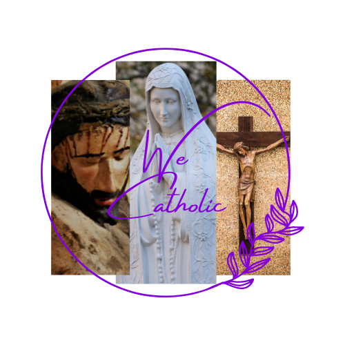

Now
Readings of the Day
{{fortoday}}
Here's a small text description for the card content. Nothing more, nothing less.
Action 1
Share
First Reading
{{myDaily.First_readingsrc}}
{{myDaily.First_reading}}
Responsorial Psalm
{{myDaily.Psalmsrc}}
{{myDaily.Psalm}}
Responsorial Psalm
{{myDaily.Second_readingsrc}}
{{myDaily.Psalm}}
Second Reading
{{myDaily.Second_readingsrc}}
{{myDaily.Second_reading}}
Allelluia
{{myDaily.allelluia}}
Gospel
{{myDaily.Gospelsrc}}
 {{myDaily.Gospel}}
{{myDaily.Gospel}}